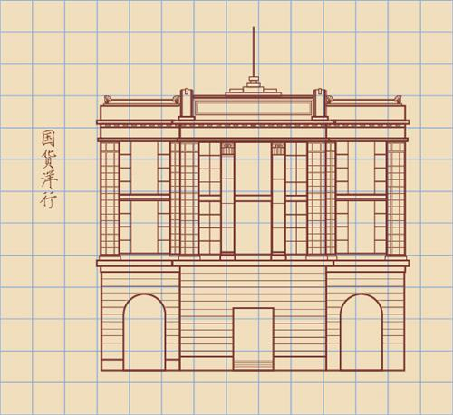

所在街区：江岸区保华街2号 建筑风格：古典主义 建造年代：1931年 现存情况：武汉美术馆

金城银行旧址是一座4层楼的筋混凝土结构建筑，为中国第一代建筑师庄俊所设计，于1930年动工，1931年落成。
金城银行正立面采用了西洋古典廊柱式样，柱高通达三层，在二层处开有圆形拱窗，使得从柱廊之外看整个建筑立面，既恢宏雄伟又富有一定的变化。
以西方建筑技术为其骨干，融合中国传统建筑装饰
1938年日军入侵武汉，强占金城银行大楼为总司令部，直至1945年抗战胜利才被金城银行收回。解放后，1952年金城银行大楼由当时的银行出租给了武汉图书馆，到1957年，在这座建筑里开设了武汉少年儿童图书馆。
2003年策划建立武汉美术馆，少儿图书馆才择地迁出。这一座建筑，经过不同的时代，生命的历程也在岁月之中跌宕、起伏、延伸着，看来，优秀历史建筑的保护应该是一个永久的话题。 2008年12月26日武汉美术馆对外开放。它的前身是金城银行大楼，2005年，武汉市政府投资近2亿元改造金城银行（武汉市一级保护建筑）和金城里（武汉市二级保护建筑）一体化建筑，作为武汉美术馆。改造中，仅保留了金城银行大楼和金城里的主立面外墙和沿中山大道、保华街两侧房屋的外墙，拆除所有内部结构，根据美术馆的功能和设施的要求，重新设计为中庭环廊式格局。它成为武汉市重要的文化设施之一，这也是国内第一个将近代居住类建筑改造为市级美术馆的案例